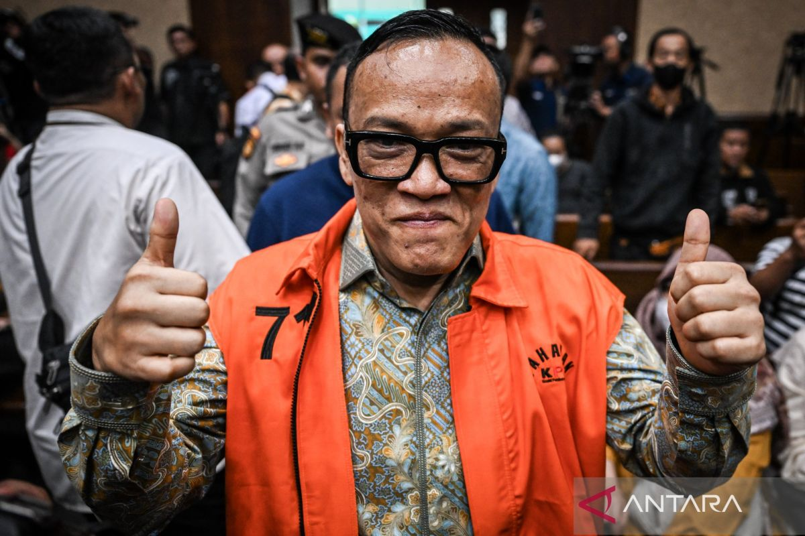
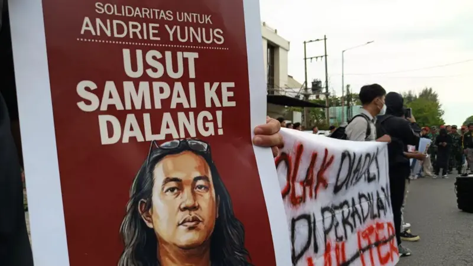

Berita Terbaru

Immanuel Ebenezer Akui Terima Gratifikasi Rp3,36 Miliar Sejak 2024
Dalam kasus tersebut, Noel didakwa melakukan pemerasan terhadap para pemohon sertifikasi atau lisensi K3 senilai Rp6,52 miliar dan menerima gratifikasi.

Babak Baru Sidang Penyiraman Air Keras ke Aktivis Andrie Yunus
Dokter spesialis mata ungkap korban hanya bisa membedakan gelap dan terang pada kedua matanya.